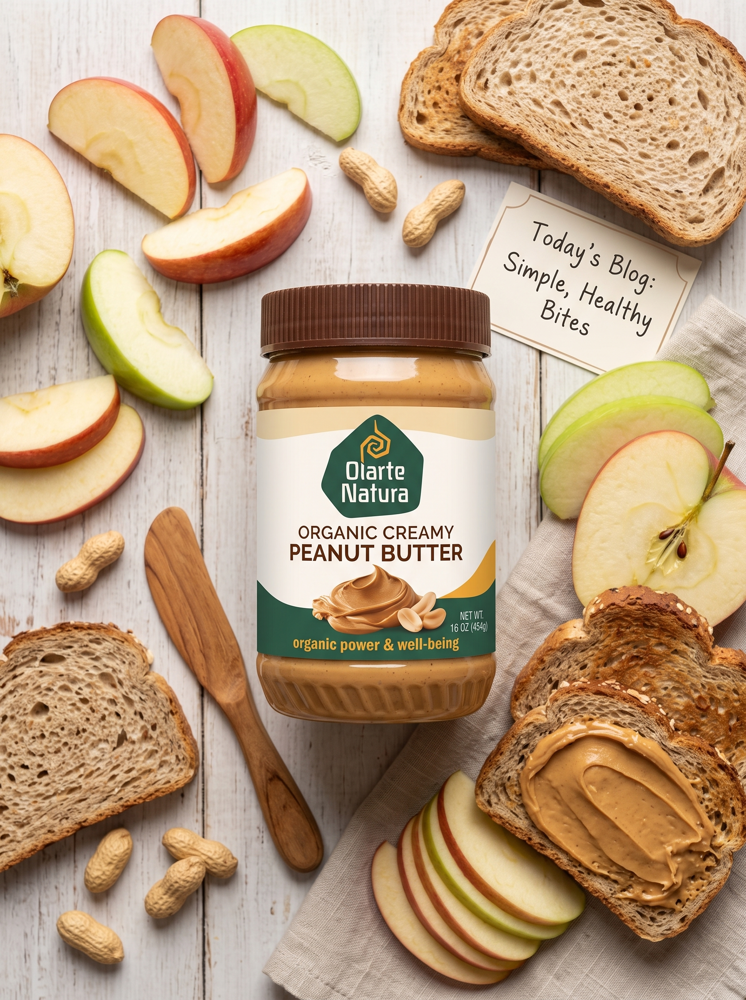
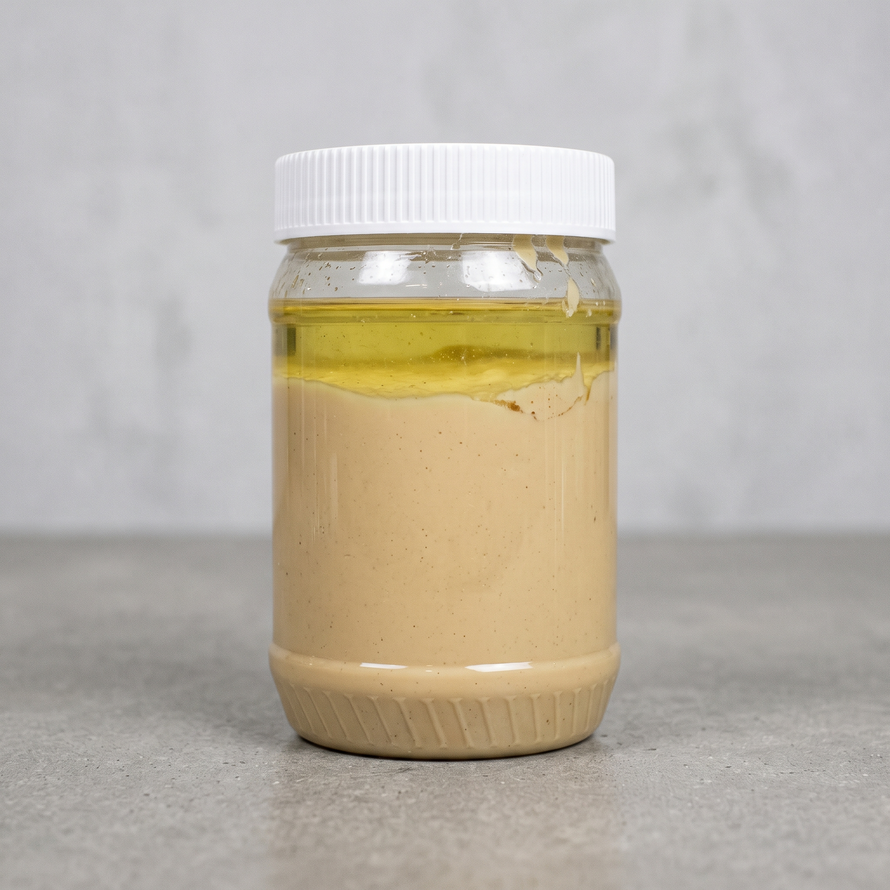
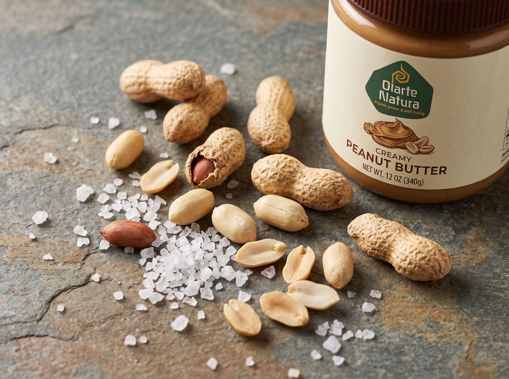
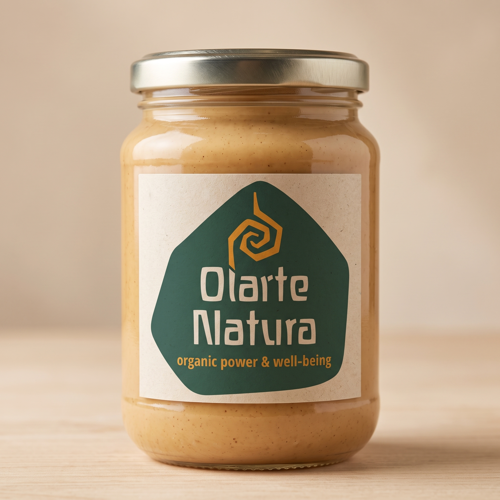
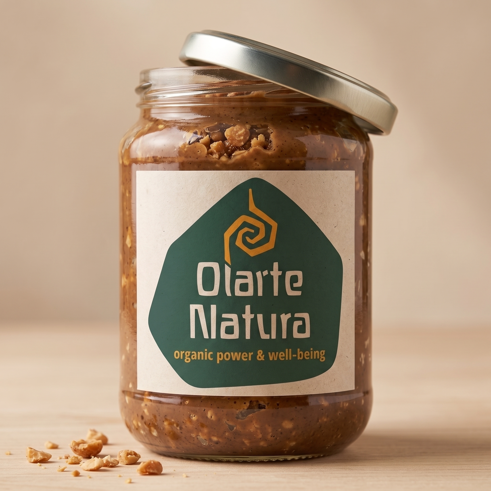
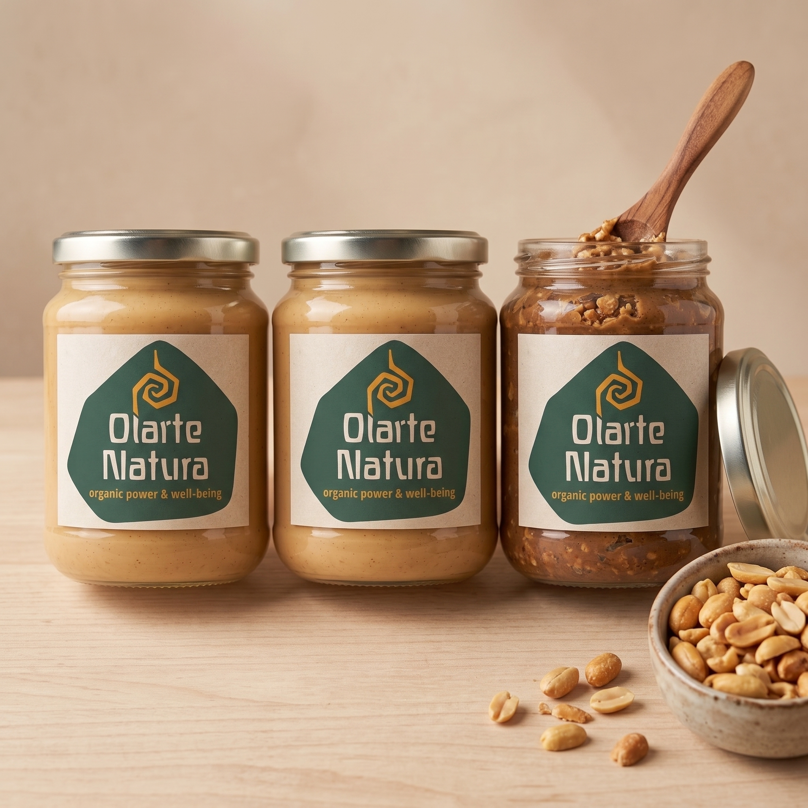
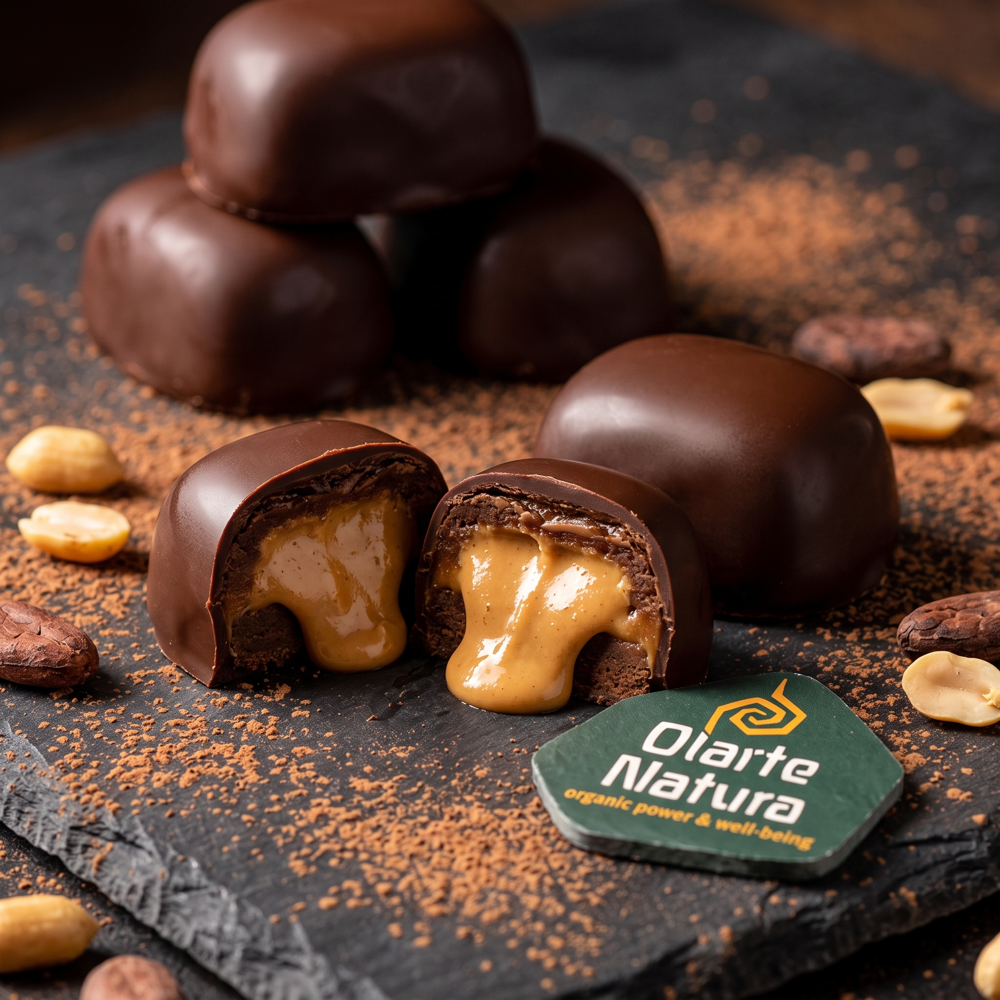
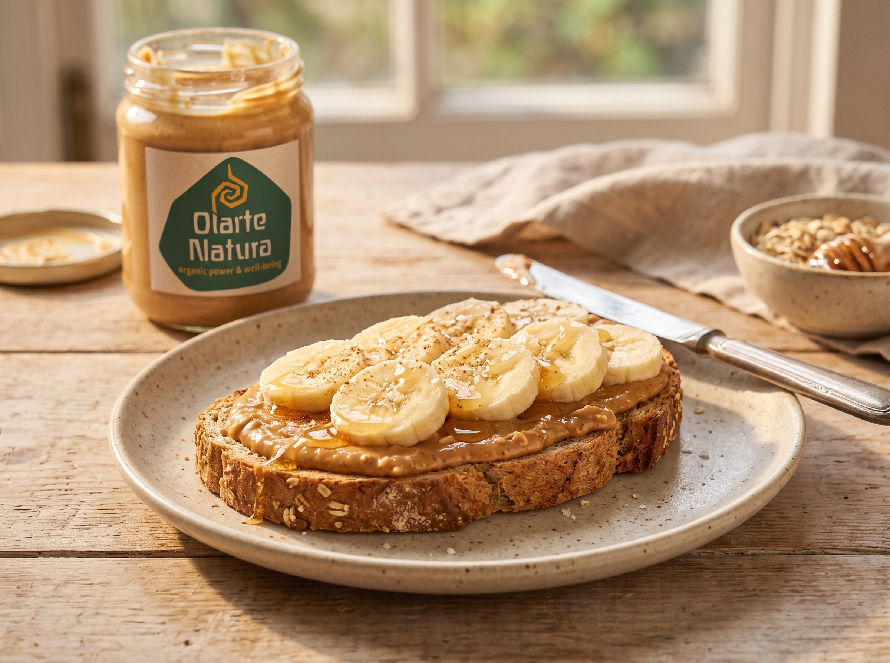
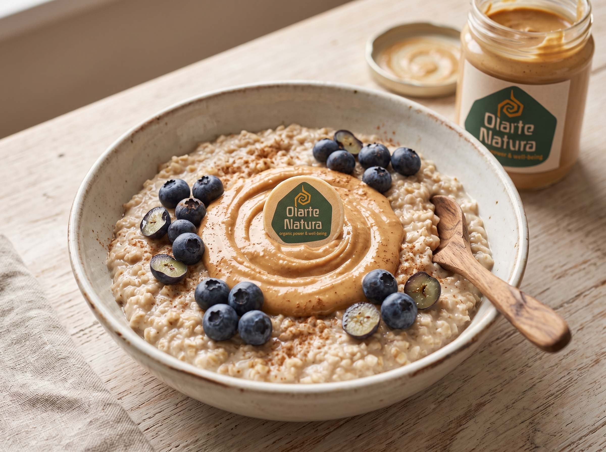

"La diferencia se nota en la textura desde la primera cucharada. Ya no vuelvo a las de supermercado."
D Daniela R. — Crossfit
Maní 100% real, tostado despacio y molido hasta lograr una textura densa. Sin azúcar añadida, sin rellenos, sin promesas vacías.

Etiquetas que prometen "natural" y esconden azúcar, aceites de palma y rellenos que bajan la calidad para bajar el costo.
Etiquetada como "natural" pero con endulzantes en los primeros tres ingredientes.
Aceites vegetales baratos que rompen la consistencia real del maní tostado.
Diluida con rellenos, aporta menos de lo que tu entrenamiento necesita.


Seleccionamos el grano, lo tostamos en pequeños lotes y lo molemos hasta lograr una textura densa y untuosa, sin procesos industriales que le quiten sabor ni nutrientes.
Cada porción está pensada para encajar en una rutina real, no en una dieta perfecta que nadie sigue.
9g de proteína natural por porción, sin aislados ni polvos añadidos.
El dulzor natural del maní tostado es suficiente, sin picos de glucosa.
Mayormente insaturadas, provenientes del maní entero, no de aceites añadidos.
Tostado lento que resalta el sabor del maní sin necesidad de aditivos.
Se integra sin grumos y aporta cremosidad a tu batido post-entreno.
Sobre pan integral, avena o fruta: una porción que rinde y satisface.
| Característica | Núcleo | Marca de supermercado |
|---|---|---|
| Azúcar añadida | No contiene | Sí, en la mayoría |
| Proteína por porción | 9g | 4–6g |
| Aceites de relleno | Ninguno | Aceite de palma frecuente |
| Tostado | En lotes pequeños | Industrial a gran escala |
| Conservantes | Sin conservantes | Suelen incluir |

Textura densa, sal marina, tostado medio.

Con trocitos de maní tostado para más textura.

Dos clásicas y una crocante, para todo el mes.



Nota de producción: reemplazar los poster y añadir los src de video reales antes de publicar.
Escogemos maní de buen tamaño y maduración uniforme.
Tostado lento en pequeños lotes para resaltar el sabor.
Molienda controlada hasta la textura ideal.
Frascos sellados al momento, sin tiempos muertos.
Sale del taller directo a tu casa o gimnasio.
Buscábamos algo simple: maní de verdad, sin azúcar escondida. No lo encontramos, así que empezamos a tostar nuestros propios lotes para amigos del gimnasio. Hoy seguimos con la misma receta del primer día.
En Lima entre 1 y 2 días hábiles. A provincias, entre 3 y 5 días hábiles según la zona.
No. Consérvala en un lugar fresco y seco. Es normal que el aceite natural se separe un poco: solo mézclala antes de usar.
Se procesa en una planta que también manipula otros frutos secos. Si tienes alergias severas, consulta el etiquetado antes de consumir.
Sí, en Lima Metropolitana. Para otras ciudades trabajamos con pago anticipado y transferencia.
Toca cualquier botón de WhatsApp de la página, cuéntanos qué formato quieres y coordinamos el pago y envío directamente en el chat.
Tostado en lotes pequeños, así que el stock de cada lote es limitado. Pide el tuyo antes de que se agote esta tanda.